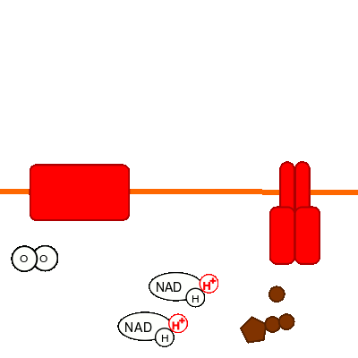

Zellatmung
Endoxidation

Abb. 1: Membranvorgänge der Endoxidation
- Das starke Reduktionsmittel NADH₂⁺ gibt an der
inneren Mitochondrienmembran von der Seite der
Mitochondrienmatrix aus zwei
Elektronen an die
Redoxenzyme ab.
- Die beiden Protonen werden
in den Intermembranraum transportiert.
- Die Protonen diffundieren entlang des
Konzentrationsgefälles zurück ins Stroma und treiben dabei an dem Enzym
ATP-Synthetase die Bildung des Universalenergieträgers
ATP aus den energieärmeren Vorstufen
ADP und
Pi an.
- Elementarer Sauerstoff dient hier als starkes Oxidationsmittel,
das die Elektronen aufnimmt und mit den
[aus der Reaktion mit insgesamt zwei Molekülen NADH₂⁺ entstandenen]
wieder in die Mitochondrienmatrix
eingeströmten vier
Protonen zwei Wassermoleküle bildet.
- Pro veratmetem Glucose-Molekül müssen
10 NADH₂⁺ und
2 FADH₂⁺
wieder verbraucht werden,
es werden also 6 Sauerstoffmoleküle benötigt.
- Im Verlauf der Endoxidation werden pro Molekül Glucose etwa 28 ATP gebildet
(10 • 2,5 ATP pro NADH₂⁺ + 2 • 1,5 ATP pro FADH₂⁺)
Externe Links
Atmungskette
Atmungskette
Atmungskette